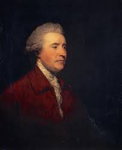
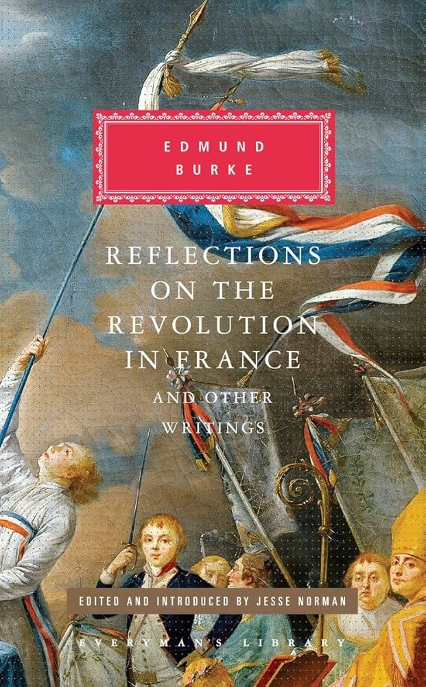
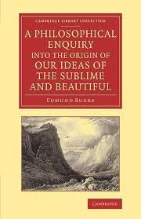
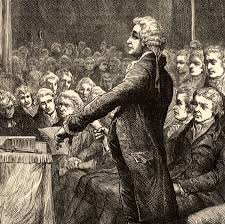
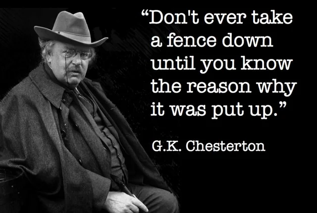

Edmund Burke is widely regarded as the father of conservatism. He was born in Dublin, Ireland in 1729, and studied at Trinity College Dublin before moving to London to pursue a career in law and politics.
Biography
Edmund Burke was born in Dublin, Ireland, in 1729, to a Catholic mother and a Protestant father. Burke practiced his father's Anglican faith throughout his life. He spent part of his childhood in County Cork, Ireland, and was educated in County Kildare at a Quaker school, before attending Trinity College Dublin for college. After graduating in 1748, Burke moved to London to train in the Law. He soon quit, however, and began a writing career. Burke married Jane Mary Nugent in 1757, and the two would go on to have two sons, Christopher and Richard. Christopher died at age 5, and Richard at 36. Burke later entered Parliament, and continued writing during the period of the American Revolution. His political career is covered elsewhere, but he would most famously criticize the French Revolution during his tenure, and also opposed the slave trade. He died after struggling with what is believed to be stomach cancer in Buckinghamshire, England, in 1797.
Books


Political Career

Burke began his career in parliament in 1765, where he would serve for 35 years as an MP
for Wendover, Bristol, and lastly Malton.
During his career, Burke was known for his sympathy towards the American colonists,
advocation for compromise rather than repression.
He also led impeachment proceedings against Warren Hastings, the governor general of India,
for corruption in relation to the British East India Company.
Perhaps most famously, Burke strenuously opposed the French Revolution, which he considered an imprudent,
destructive, and barbaric overreaction.
Political Thought

Much of Burke's political thought can be learned through his reaction to the French Reovlution. In his response, Burke emphasizes the importance of respecting the inherited traditions of the country, treating its constitution as a possession of the the past, present, and future political body. It is not for one generation to change rashly, but instead to prudently adjust law and custom which is incoherent with the overall body politic. Burke's thought resembles Chesterton's fence; before you remove a fence, know why it's there in the first place. This is why the French Revolution was so abhorrent to Burke. With no respect for their inherited tradition, the framers of the revolution cast aside their constitution and thus destroyed their shared country.